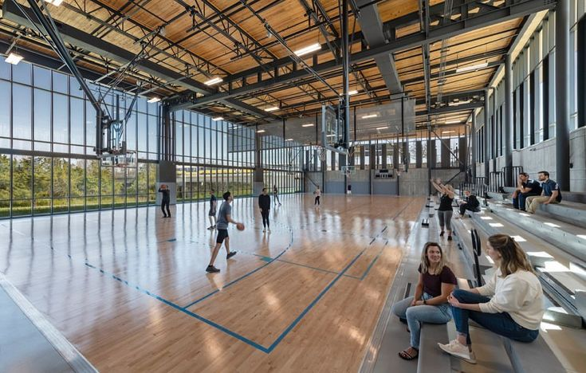
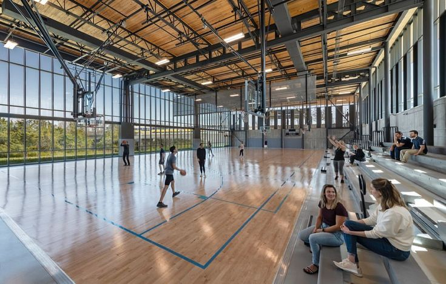
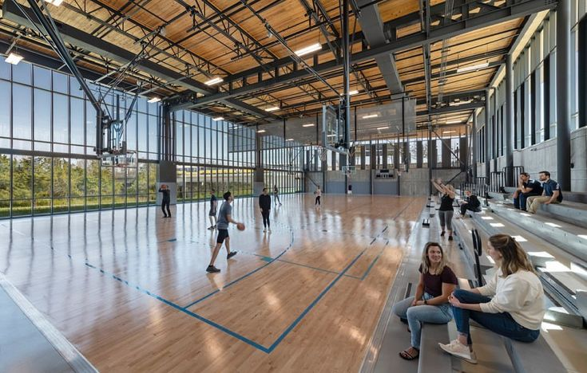

Our mission is to provide high-quality computing education that combines academic excellence with real-world applications. We aim to equip students with technical skills, creative thinking, and problem-solving abilities needed to succeed in the fast-evolving digital world.
To become a leading School of Computing recognized for innovation, research excellence, and industry-ready graduates who contribute to global technological advancement.
The School of Computing was established with the goal of nurturing future technology professionals. Over the years, it has grown into a vibrant academic community offering diploma, degree, and short courses in computing disciplines. The school focuses on both theoretical foundations and hands-on practice, preparing students for real-world challenges in areas such as software development, data analytics, and networking.
Dr. Michael Anderson
Dean of School of Computing
Dr. Emily Roberts
Vice Dean of School of Computing
Here are our facilities
